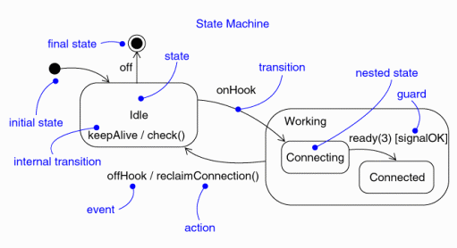
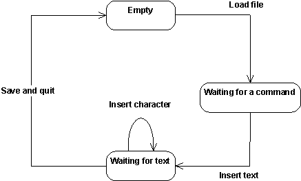
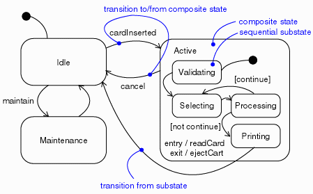
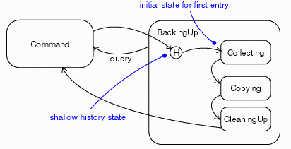
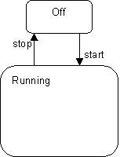
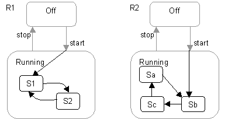

| Рекомендация: Диаграмма конечных состояний |
 |
|
| Связанные элементы |
|---|
ОбъяснениеКонечный автомат - это средство моделирования динамического поведения элемента модели, а точнее, аспектов поведения системы, управляемых событиями (см. Концепции: события и сигналы). Конечный автомат хорошо моделирует поведение, зависящее от состояния, то есть когда само поведение определяется состоянием, в котором находится элемент модели. Элементы модели, поведение которых не зависит от состояния, не требуют привлечения понятия конечного автомата для описания их поведения. Обычно такие элементы - это пассивные классы, которые отвечают в основном за работу с данными. Конечный автомат должен использоваться для моделирования поведения активного класса, который работает с событиями вызова и сигналами и реализует переходы между состояниями конечного автомата класса. Конечный автомат - это набор состояний, связанных переходами. Состояние объекта определяется тем, что он выполняет какую-либо задачу или ожидает события. Переход - это отношение между двумя состояниями. Он инициируется по какому-либо событию, при этом выполняются какие-либо действия или вычисления, и результатом его является другое конечное состояние. На рисунке 1 показаны элементы конечного автомата.  Рис. 1. Нотация конечного автомата. Простой редактор может рассматриваться как конечный автомат с состояниями Пусто, Ожидание команды и Ожидание текста. Переходы конечного автомата вызывают события Загрузить файл, Вставить текст, Вставить символ и Сохранить и завершить работу. Конечный автомат редактора показан на рисунке 2.  Рис. 2. Конечный автомат для простого редактора. СостоянияСостояние объекта определяется тем, что он выполняет какую-либо задачу или ожидает события. Объект может находиться в состоянии в течение определенного отрезка времени. Состояние имеет следующие свойства:
Как показано на рисунке, для конечного автомата можно определить два особых состояния. Начальное состояние указывает состояние конечного автомата по умолчанию при его создании или начальное подсостояние. Оно изображается черным кружком. Конечное состояние указывает на завершение выполнения конечного автомата или содержащего состояния. Оно изображается черным кружком внутри черной окружности. Начальное и конечное состояния - это псевдосостояния. Ни одно из них не может иметь признаков обычного состояния, за исключением имени. Переход из начального состояния в конечное может быть полноценным переходом, включающим сторожевое условие и действие, но не может иметь событие триггера. Переходы
Переход - это отношение между двумя состояниями, указывающее, что объект в первом состоянии выполнит определенные действия и перейдет в другое состояние, когда произойдет какое-либо событие и будут выполнены указанные условия. Если происходит изменение состояния, то говорят, что переход осуществился. Пока переход не осуществился, объект находится в исходном состоянии, потом он переходит в целевое состояние. Переход имеет следующие свойства:
Переход может иметь несколько источников, и в этом случае он представляет соединение нескольких параллельных состояний, и несколько целевых состояний, и в этом случае он представляет разветвление в несколько параллельных состояний. Событие триггераВ контексте конечного автомата событие - это реализация воздействия, которое может инициировать переход в другое состояние. События могут иметь тип сигнала, вызова, интервала времени или изменения состояния. Сигнал или вызов могут иметь параметры, значения которых могут применяться для перехода, в том числе такие как сторожевое условие или действие. Переход может также осуществляться и не по триггеру. Такие переходы, называемые переходами завершения, инициируются неявно, когда задача исходного состояния выполнена. Сторожевые условияСторожевое условие проверяется в случае срабатывания триггера для перехода. При этом переход может осуществляться в разные целевые состояния, если сторожевые условия не перекрываются. Сторожевое условие проверяется только один раз для перехода в момент возникновения события. Это булевское выражение, которое может ссылаться на состояние объекта. ДействияДействие - это атомарная вычислительная процедура. Это означает, что событие не может прервать ее, и она будет выполнена до конца. Этим она отличается от задачи, которую могут прерывать другие события. Действия могут включать вызовы операций (владельца конечного автомата и прочих видимых объектов), создание или уничтожение другого объекта или отправку сигнала другому объекту. В случае отправки сигнала к имени сигнала добавляется приставка - ключевое слово 'send'. Действия при входе и выходеДействия при входе и выходе задают действия, которые выполняются всякий раз при входе в состояние и выходе из него, соответственно. Действия при входе и выходе позволяют осуществить это, не задавая явно всякий раз действия при входе в состояние и выходе из него. Действия при входе и выходе не могут иметь аргументов или сторожевых условий. Действия при входе в основное состояние конечного автомата элемента модели могут иметь параметры, которые получает автомат при создании элемента. Внутренние переходыВнутренние переходы позволяют обработать события в рамках состояния, не выполняя переход в другое состояние и тем самым избегая обработки действий при входе и выходе. Внутренние переходы могут иметь события с параметрами и сторожевые условия и фактически представляют собой обработчики прерываний. Отложенные событияОтложенные события - это события, которые будут обработаны при входе в состояние, для которого отложенное событие будет активным. При входе в такое состояние событие срабатывает и может вызвать переход, как если бы оно только что возникло. Реализация отложенных событий требует наличия внутренней очереди событий. Если приходит отложенное событие, оно помещается в очередь. События из очереди обрабатываются при входе в состояние, в котором они не помечены как отложенные. ПодсостоянияПростое состояние не имеет внутренней структуры. Состояние, имеющее структуру вложенных состояний, называется составным. Вложенность состояний может быть многоуровневой. Вложенный конечный автомат может иметь не более одного начального состояния и одно конечное состояние. Подсостояния позволяют упростить сложный одноуровневый конечный автомат, подчеркивая, что некоторые состояния могут иметь место только в каком-либо контексте (вмещающее состояние).  Рис. 3. Подсостояния. Источник, внешний по отношению к составному состоянию, может инициировать переход, относящийся к составному состоянию или его подсостоянию. В случае составного состояния вложенный конечный автомат должен иметь начальное состояние, которому передается управление после входа в составное состояние и после обработки его действия при входе, если оно задано. В случае подсостояния управление передается ему после обработки действия при входе в вмещающее состояние, если оно задано, и после обработки действия при входе в вложенное состояние, если оно задано. Переход, выводящий из составного состояния, может иметь источником составное состояние или подсостояние. В любом случае сначала выполняется выход из вложенного состояния ( с выполнением действия при выходе, если оно задано), а затем - выход из вмещающего состояния ( с выполнением действия при выходе, если оно задано). Переход, источником которого является составное состояние, фактически прерывает задачу вложенного конечного автомата. Хронологические состоянияЕсли не оговорено иначе, то при входе в составное состояние работа вложенного конечного автомата начинается из начального состояния (если только переход не выполняется напрямую для подсостояния). Хронологические состояния позволяют повторно войти в подсостояние, которое было активным при выходе из составного состояния. Пример хронологических состояний приведен на Рис. 3.  Рис. 4. Хронологическое состояние. Общие методики моделированияКонечный автомат чаще всего используется для моделирования поведения объекта в течение всего его существования. Это особенно хорошо применимо для объектов, поведение которых зависит от состояния. Объекты, для которых применим конечный автомат, это классы, подсистемы, варианты использования и интерфейсы (для проверки состояний, которые может иметь объект, реализующий интерфейс). В системах реального времени конечный автомат применяется также для капсул и протоколов (для проверки состояний, которые может иметь объект, реализующий протокол). Конечный автомат применяется не для всех объектов. Если поведение объекта очень простое, например, он используется для хранения данных, то его поведение не зависит от состояния и его конечный автомат не представляет интереса. Моделирование существования объекта подразумевает три аспекта: события, на которые может отвечать объект, ответ на такие события и влияние прошлого на текущее поведение. Моделирование существования объекта также подразумевает задание порядка, в котором объект может отвечать на события, начиная с времени создания объекта и заканчивая временем его разрушения. Для того чтобы смоделировать существование объекта, выполните следующее:
Полезные советы
Проектирование с абстрактными конечными автоматамиАбстрактный конечный автомат - это конечный автомат, который должен быть детализирован перед тем, как его можно будет использовать. Абстрактные конечные автоматы могут использоваться для определения шаблонного поведения, которое будет уточняться в последующих элементах модели.  Рис. 5. Абстрактный конечный автомат. Рассмотрим абстрактный конечный автомат на рис. 5. Этот простой конечный автомат представляет очень абстрактный уровень поведения (автоматизации управления) многих типов элементов в системах, управляемых событиями. Хотя на таком уровне типы элементов имеют общие свойства, их фактическое поведение может сильно различаться в зависимости от назначения. Поэтому такой конечный автомат будет скорее всего реализован как абстрактный класс, который будет корневым для более специализированных активных классов Определим два таких уточнения абстрактного конечного автомата, используя наследование. Эти два уточнения, R1 и R2, показаны на рис. 6. Для ясности элементы, унаследованные из родительского класса, показаны серым.  Рис. 6. Два уточнения конечного автомата с рис. 5. Эти два уточнения различаются в том, как они реализуют рабочее состояние и как они расширяют исходный переход "start". Такое уточнение возможно только при знании деталей, недоступных при определении абстрактного класса. Цепочки состоянийСпособность "продолжить" и входящие, и исходящие переходы очень важна для уточнения, описанного выше. Может показаться, что для такой семантики достаточно будет входных точек и конечных состояний в сочетании с переходами продолжения. К сожалению, этого недостаточно в ситуации, когда требуется расширить несколько различных переходов. Фактически для шаблона абстрактного поведения требуется выделить сегменты перехода, выполняющиеся в рамках одного этапа. Это означает, что переходы, входящие в иерархические состояния, разбиваются на две части: входную, которая заканчивается на границе состояния, и расширение, которое продолжается внутри состояния. Точно также исходящие переходы, осуществляемые в рамках иерархического состояния, разбиваются на часть, которая завершается на границе вмещающего состояния, и часть, которая выполняется от границы вплоть до целевого состояния. Этот эффект моделируется в UML так называемыми цепочечными состояниями. Для этого применяется стереотип (<<chainState>>) концепции состояния UML. Это состояние, предназначенное только для представления перехода в виде цепочки автоматических (осуществляемых без триггеров) переходов. Цепочечное состояние не имеет внутренней структуры, для него не заданы действия при входе и выходе или внутренняя задача. Никакие его переходы не осуществляются по триггерам. Оно может иметь любое число входящих переходов. Оно может иметь исходящий переход без события-триггера, который осуществляется автоматически, когда это состояние активируется входящим переходом. Цель этого состояния - связать в цепочку входящий переход с отдельным исходящим переходом. В цепочке между входящими переходами и исходящим переходом первые соединены с другим состоянием внутри вмещающего состояния, а последний - с другим состоянием вне вмещающего состояния. Цель создания цепочечного состояния заключается в том, чтобы отделить внутреннюю спецификацию вмещающего состояния от его окружения, это вопрос инкапсуляции. Фактически цепочечное состояние представляет собой "проходное состояние", которое позволяет перевести один переход в другой. Если продолжение перехода не определено, то переход останавливается внутри цепочечного состояния, и для продолжения требуется осуществить какой-либо переход в вмещающем состоянии. Пример конечного автомата на рис. 7 иллюстрирует цепочечные состояния и их обозначения. Цепочечные состояния представлены на диаграмме конечного автомата белыми кружками внутри соответствующего иерархического состояния. Эти обозначения напоминают похожие обозначения для начального и конечного состояний. Кружки - это стереотипные значки для цепочечных состояний, и они обычно рисуются рядом с границей для наглядности. Одним из вариантом было бы рисовать их на границе вмещающего состояния.
Figure 7. Цепочки состояний и цепочечные переходы. Цепочечный переход в данном примере включает три сегмента e1/a11-/a12-/a13. Когда приходит сигнал e1, осуществляется переход e1/a11, выполняется его действие a11, после чего достигается цепочечное состояние c1. После этого выполняется переход из c1 в c2 и затем, так как c2 - это тоже цепочечное состояние, переход из c2 в S21. Если состояния на этих путях также имеют действия при входе и выходе, то последовательность выполнения принимает следующий вид:
Все это выполняется в рамках одного целостного этапа. Это можно сравнить с семантикой выполнения действий при прямом переходе e2/a2:
|

© Copyright IBM Corp. 1987, 2006. Все права защищены.. |